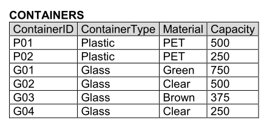

SQL - Continued
Recap - last lecture - SELECT
Basic Syntax
SELECT <attribute list>
FROM <table list>
[WHERE <condition>];
- <attribute list> is a list of attribute names (or an expression) whose values are to be retrieved by the query.
- <table list> is a list of relation names required to process the query.
- <condition> is a conditional (Boolean) expression that identifies the tuples to be retrieved by the query.
Projection in SQL
- Select the attributes of given collection of tuples.
- Distinct: By default, duplicates are not eliminated in SQL relations, which are bags or multisets and not sets. Use of DISTINCT will eliminate duplicates and enforce set semantics.
- The asterix character (*) acts as a wildcard, selecting all of the columns in the table.
Selection in SQL Selection (WHERE clause)
- Select tuples from given collection of tuples.
- <search condition> is a conditional (Boolean) expression that identifies the tuples to be retrieved by the query.
Complete WHERE condition clauses
| Operand | Example |
|---|---|
=, <> |
ID <> 324, price = 42.30 |
<, > |
ID > 324, price < 42.30 |
LIKE, NOT LIKE |
name LIKE '%Mary%' will select all the tuples substrings containing the name 'Mary', such as 'Mary-Ann' or 'Maryam' e.g. |
IN |
name IN ('Mary', 'John', 'Steve') acts as a ternary OR operation |
BETWEEN |
salary BETWEEN 10000 AND 30000 |
IS |
name IS NULL acts as a ternary OR operation |
GROUP BY
Aggregation and grouping
Aggregates are functions that produce summary values from a set of tuples.
| Aggregate fn | Description |
|---|---|
| COUNT | Counts the number of tuples that the query returns |
| SUM/AVG | Calculates the sum/average of a set of numeric values |
| MAX/MIN | Returns the maximum/minimum value from a set of values which have a total ordering. Note that the domain of values can be non-numeric |
A couple examples:
-- Select the average salaries and combined employee salaries
SELECT AVG(salary), SUM(salary)
FROM Employee;
-- the number of employees in department number 5
SELECT COUNT(*)
FROM Employee
WHERE dNum = 5;
Aggregation and Grouping
aggregation functions are often needed to be applied to groups of rows within a table
- e.g., find the total number of employees in each department.
- e.g., find the average salary of employees in each department.
Solution: use GROUP BY
SELECT [DISTINCT] <target list>
FROM <table list>
[WHERE search condition]
[GROUP BY <grouping attributes> ]
[HAVING <group conditions> ]
[ORDER BY column [ASC|DESC] {, column [ASC|DESC]}];
Important!
When GROUP BY is used in an SQL statement, any attribute which appears in the SELECT clause must also appear in the GROUP BY clause or be in an aggregation function.

-- Find the average capacity of each container type
SELECT ContainerType, AVG(Capacity)
FROM CONTAINERS
GROUP BY ContainerType;
Think of the
GROUP BYclause as a way to organise your data into groups. When you use GROUP BY, SQL wants to make sure that each item (or attribute) you select in your SELECT clause either:
- Belongs to the same category (group) as specified in the GROUP BY clause
- You're doing something special with it, like counting how many items are in each category (e.g.
COUNT). If an item doesn't fit into one of these categories, SQL gets confused because it doesn't know how to group or aggregate that item, and it asks you to either specify the category (by including it in theGROUP BYclause) or explain what you want to do with it (by using an aggregation function). Else, you have to omit it from the query
-- Find the number of employees with a salary > 40,000 in each department
SELECT dNum, COUNT(*)
FROM Employee
WHERE salary > 40000
GROUP BY dNum;
HAVING
Conditions on Groups
- Conditions can be imposed on the selection of groups to be included in the query result
- The
HAVINGclause (following theGROUP BYclause) is used to specify these conditions, similar to theWHEREclause
-- The total number of employees in departments with more than 2 employees
SELECT dNum, COUNT(*)
FROM Employee
GROUP BY dNum
HAVING COUNT(*) > 2;